Sumoto, Hyogo: things to do, food and stays
Sumoto · Hyogo
Sumoto
Highlighted on the Hyogo map.
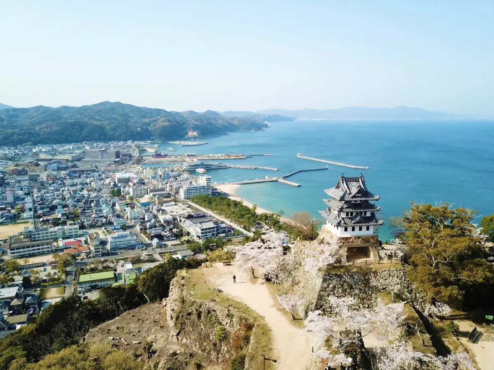
Stay
ホテルニューアワジ
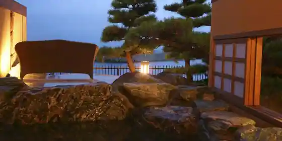
Hotel Nyuawaji
夢泉景別荘 天原
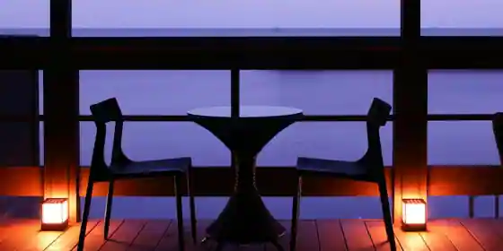
Yume Izumi Kei Besso Hara
ホテルニューアワジ別亭 淡路夢泉景
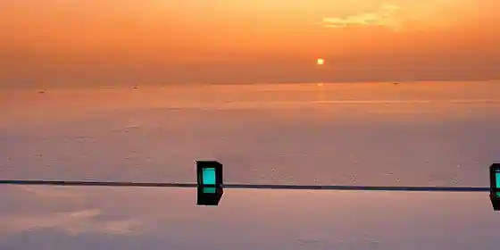
Hotel Nyuawaji Betsu Tei Awaji Yume Izumi Kei
渚の荘 花季
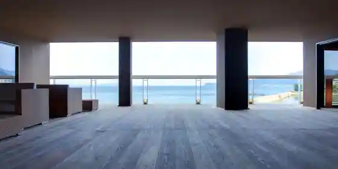
Nagisa No So Hana Ki
海のホテル 島花
Umi No Hotel Shima Hana
THE BLESS Awaji
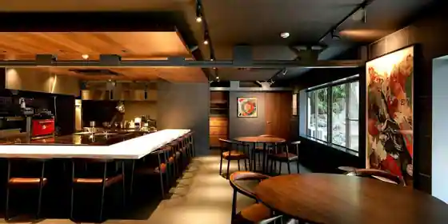
THE BLESS Awaji
夢海游 淡路島
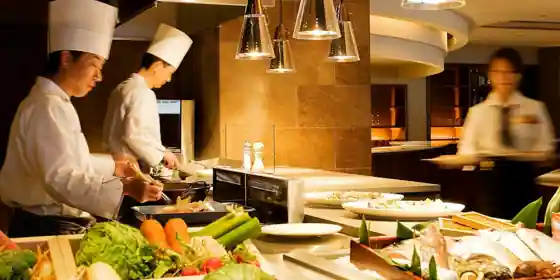
Yume Umi Yu Awaji Shima
Inn at Honkantohanareno Onsen in Yamate, Sumoto with private baths and local seafood dinners.
海のホテル島花 レジデンスヴィラ
Umi No Hotel Shima Hana Rejidensu Villa
CORAL RESORT VILLA atsuhama
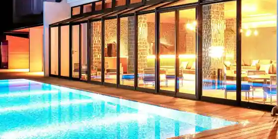
CORAL RESORT VILLA atsuhama
淡路島洲本温泉 海月館
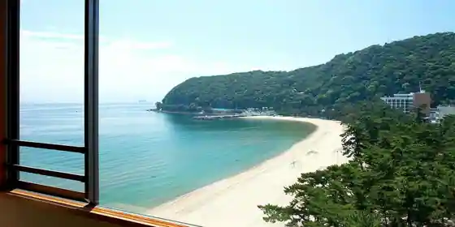
Awaji Shima Sumoto Onsen Kurage Kan
Inn at Awajishimasumoto Onsen in Kaigandori, Sumoto.
eureka awaji
eureka awaji
Inn in Goshiki, Sumoto with open-air baths.
mano mano
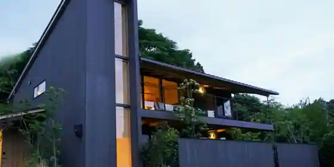
mano mano
Inn in Nakagawara, Sumoto with a sauna.
Dining
いたりあ亭
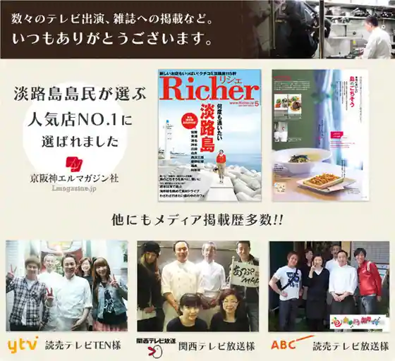
Itaria Tei
春吉
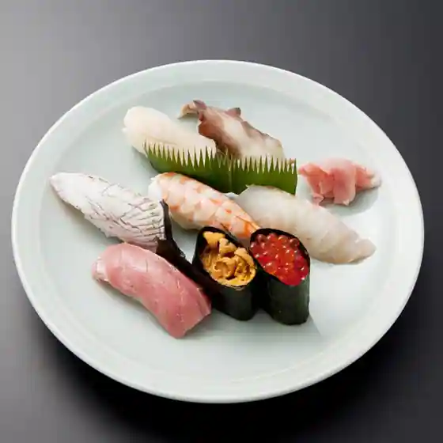
Harukichi
直丹新開地店
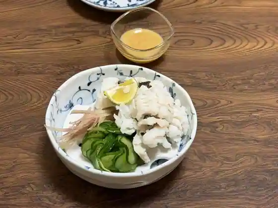
Choku Tan Shinkaichi
平野パン
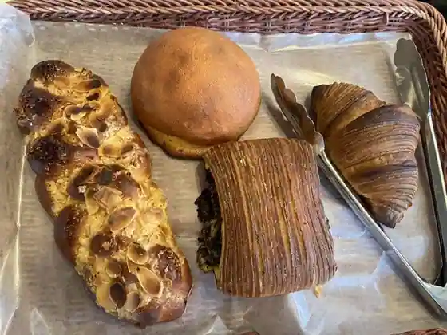
Heiya Bakery
はと
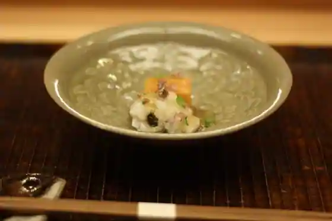
Hato
御菓子処 長手長栄堂 堀端本店
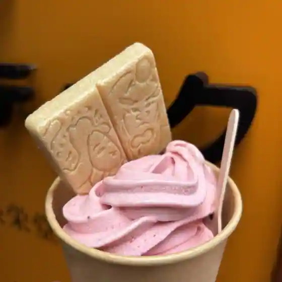
O Kashi Tokoro Nagate Choei Do Horibata Hon
四季旬創 潮音 エクシブ淡路島
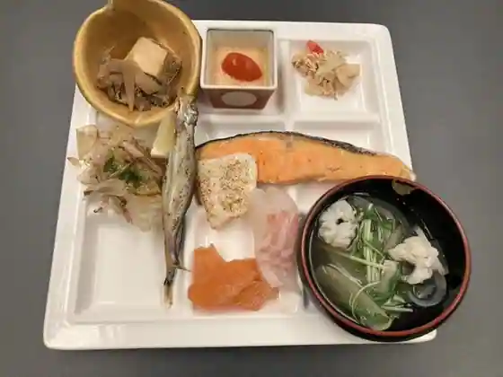
Shiki Jun So Choon Ekushibu Awaji Shima
淡路夢泉景
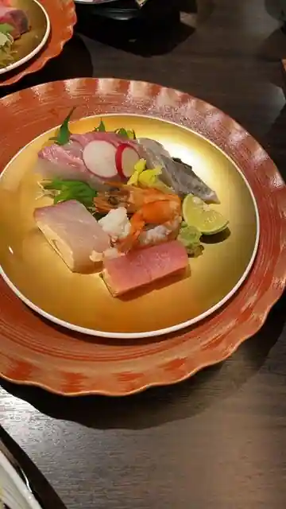
Awaji Yume Izumi Kei
金鮓
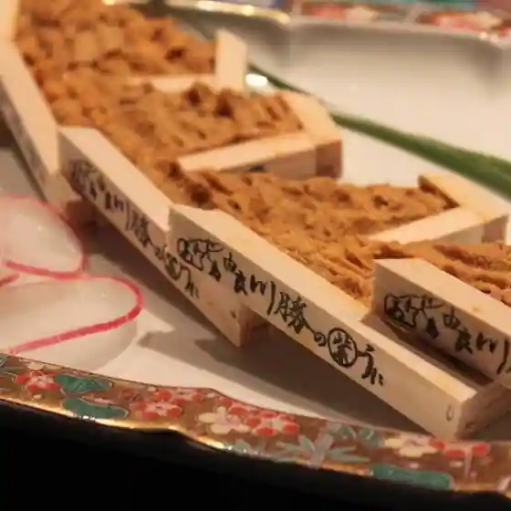
Kin Kurage
地魚料理 海山
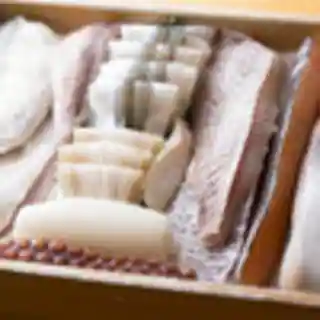
Jizakana Ryori Umiyama
アラゴスタ
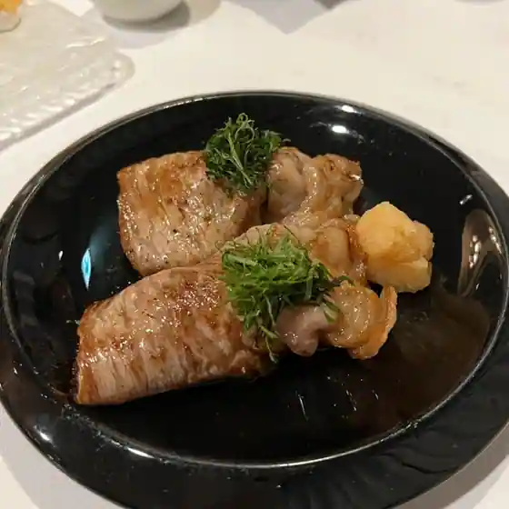
Aragosuta
珈楽粋
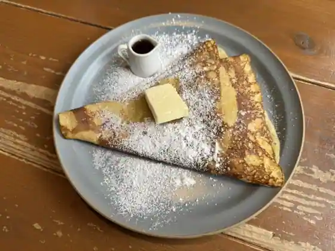
Ka Raku Sui
淡路ごちそう館 御食国
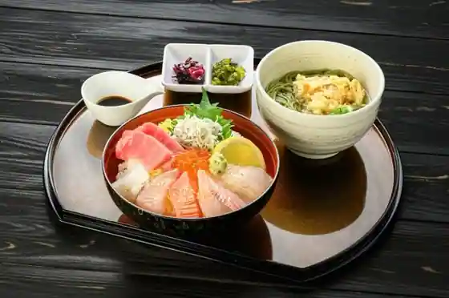
Awaji Gochiso Kan Miketsukuni
新島水産 本店

Nijima Suisan Hon
AWAJI Seaside Walk Cafe
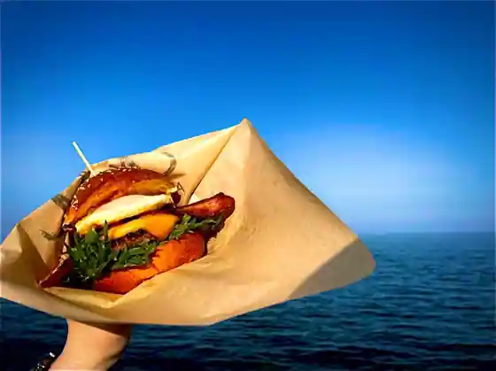
AWAJI Seaside Walk Cafe
CHEESE & PIZZA WORKS AWAJISHIMA
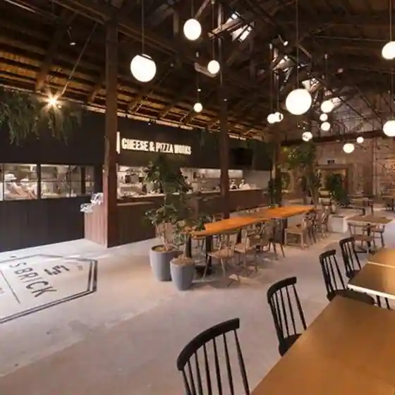
CHEESE & PIZZA WORKS AWAJISHIMA
しあわせ島ごはん まどみ
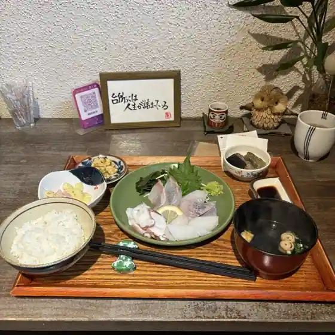
Shiawase Shima Ko Han Mato Mi
洲本温泉 海月館
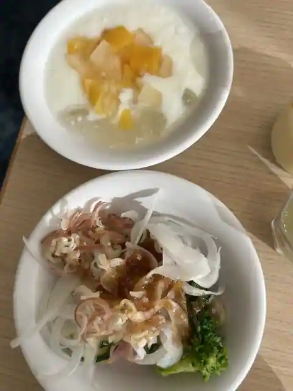
Sumoto Onsen Kurage Kan
もへいじ
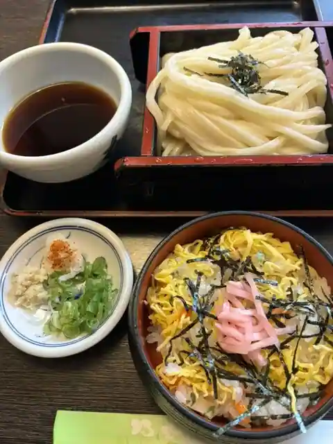
Moheiji
日洋堂
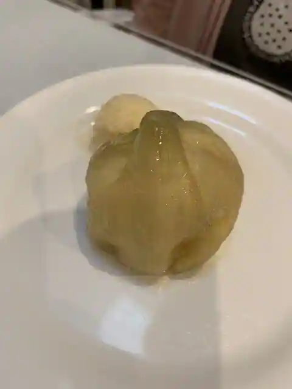
Nichi Hiroshi Do
淡路島 旬彩 ユラリユラ
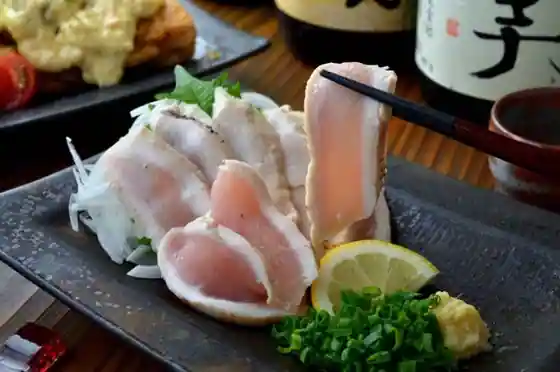
Awaji Shima Jun Sai Yurariyura
ペガサス
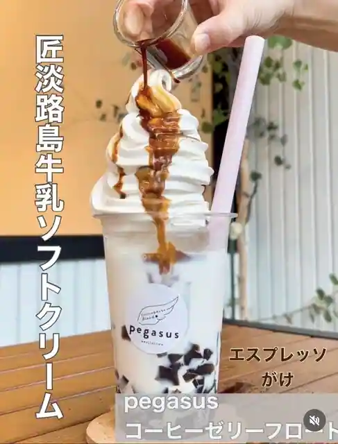
Pegasasu
中原水産
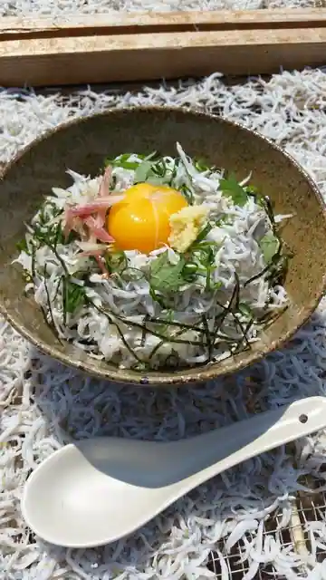
Nakahara Suisan
Sights
Sumoto Castle Ruins
Sumoto Onsen
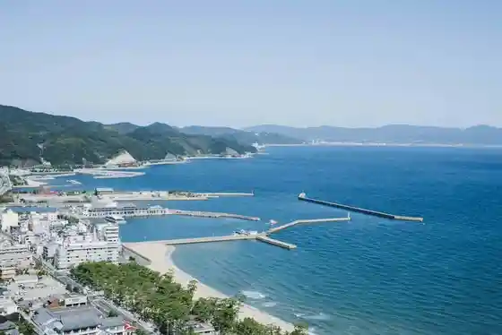